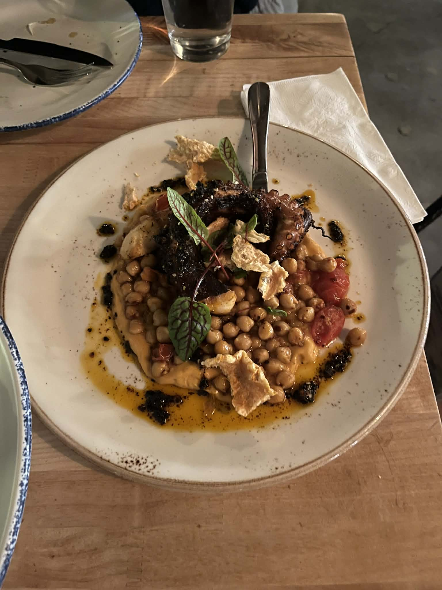
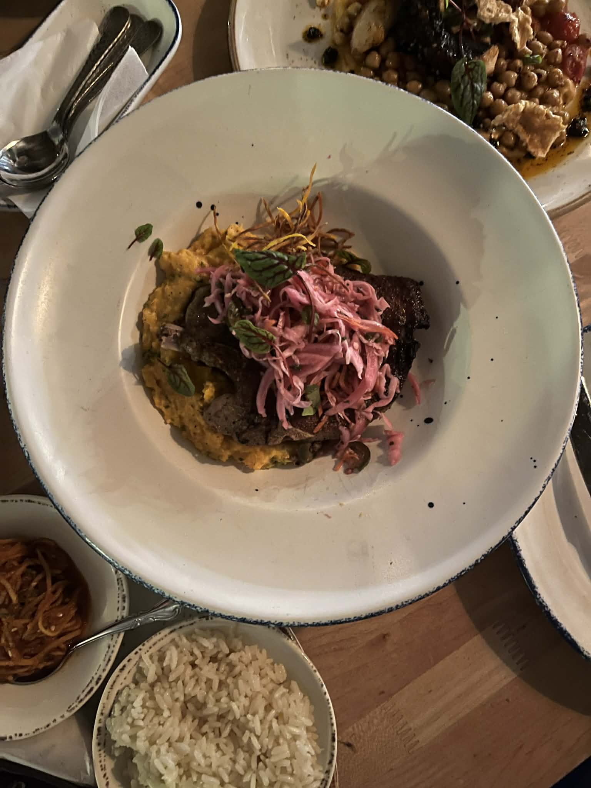
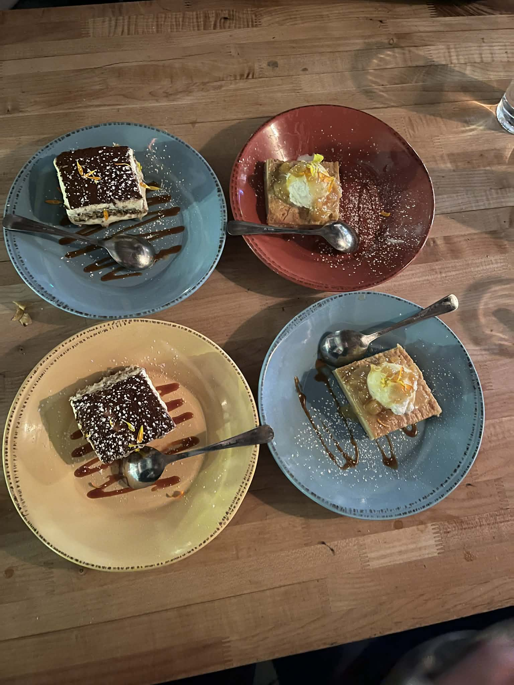
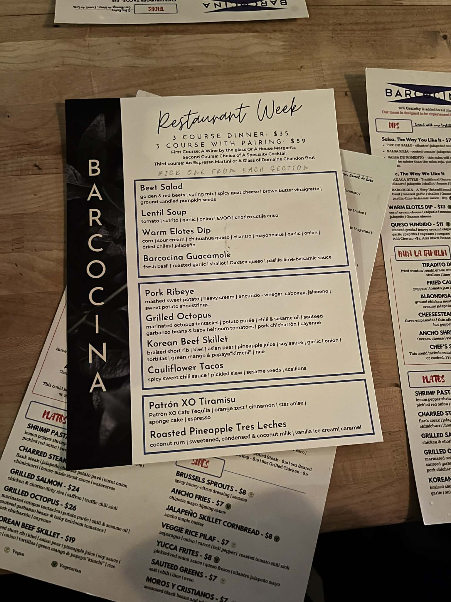

Barcocina Dining Review
"Like a warm summer's day," said my friend after his first bite of the warm elotes dip.
Outside, it was the middle of winter with snow piled so high we had to climb over a snowplow-made ridge just to reach Barcocina's entrance. For a group of Hopkins students desperate to escape Brody Atrium, however, this place was a safe haven. Inside, the restaurant provided warmth, upbeat music, low lighting, and an appetizer that made us forget the cold and midterms for a second. The dining room was lively, with a birthday group enjoying drinks, a trophy shelf of different liquors, and several conversations blended with the house mix. This made the perfect atmosphere to come and rant about a brutal day of classes. After settling in, we decided to order the restaurant week menu, consisting of an appetizer, entree, and dessert.
The appetizers made the strongest case for the experience. The warm elotes dip was light, fun, and flavorful, blending corn, cheese, and queso into something comforting without feeling heavy. From the start, I could tell this was going to be in high demand, so I stockpiled quite a bit like I was preparing for hibernation. Next, the lentil soup provided a tasty contrast, tart with notes of tomato, but not too sour. Not every starter worked as well, however: the Barcocina guacamole stalled the engine, tasting closer to "Costco bulk store-bought" guac than house-made, with balsamic vinegar providing its only real depth of flavor. It revved loudly on the first bite but had no lasting torque afterwards.

The entrees were more varied. The Korean beef skillet leaned heavily toward an Americanized version, arriving closer to pulled beef in a sauce too sweet rather than anything balanced or complex. Served with minute rice and kimchi (that was also too sweet), the dish felt more convenient than the authentic flavor I'm more accustomed to. The grilled octopus, however, was a highlight. It was lightly charred, well-salted, and tender without becoming bubblegum. I enjoyed how it was paired with a savory chickpea salad, which ended up being my most memorable component of the meal. The pork ribeye was another win: impressively cooked, super tender, and accompanied by a hearty blend of mashed pumpkin enhanced with butter.



Korean Beef Skillet (Left) Grilled Octopus (Middle) Pork Ribeye (Right)
Desserts continued the pattern of solid results. The Patron XO Tiramisu offered a rich, creamy sweetness, with layers of mascarpone, soaked in coffee liqueur. The cocoa dusting added a pleasantly bitter contrast that almost dominated the palate, but balanced the dessert's sweetness. The Patron itself was largely undetectable, but maybe that is a perk of smooth tequila. The Roasted Pineapple Tres Leches cake was better. The pound cake absorbed some but not all the milk mixture, leaving it balanced despite a flavorful sauce and a welcome scoop of ice cream on top. The bits of pineapple puree made the dessert a delight, as I could eat a whole plate of that by itself.

Service was attentive but uneven. Staff appeared more focused on the bar crowd than the dining room, generously offering a complimentary tequila shot to celebrate a nearby birthday while rushing through entree orders and water refills at our table. The attention to the celebration was understandable, but made the eating feel secondary to the drinking.
In the end, Barcocina feels best for groups looking for a lively place to drink and appetizers rather than a full meal. At its price point, the experience lands squarely in the good category: pleasant and reliable but not a must-visit destination. For Hopkins students, it's a great place to catch a break from the mountains of work and exams.
Restaurant Week Menu
The Space: The restaurant has ambient, low lighting combined with upbeat house music, creating a lively but comfortable atmosphere. There is outdoor seating available with umbrellas; however, there are no space heaters, and the patio was closed due to snow during our visit.
The Crowd: The crowd was mainly social and energetic, with most diners appearing to be there to enjoy drinks and conversation rather than a quiet meal. Noise levels reflected this, resulting in a bar feel.
The Bar: The bar offers a wide range of drinks appealing to both casual drinkers and those looking for specialty cocktails. The diners around us seemed delighted by them.
The Bill: ($$) Entrees are typically between $15-20, while appetizers range from $10-15. We opted for the Restaurant Week menu, which was $35 per person and included an appetizer, entree, and dessert. After tax and tip, the total came out to approximately $45 per person.
What We Liked: Warm Elotes Dip; Grilled Octopus; Pork Ribeye ($35 total for Restaurant week)
